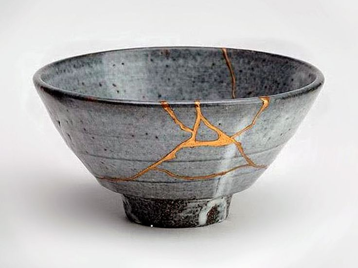
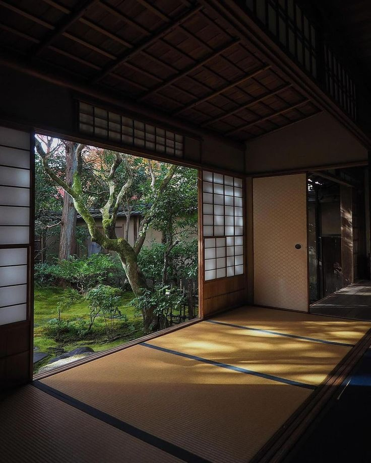
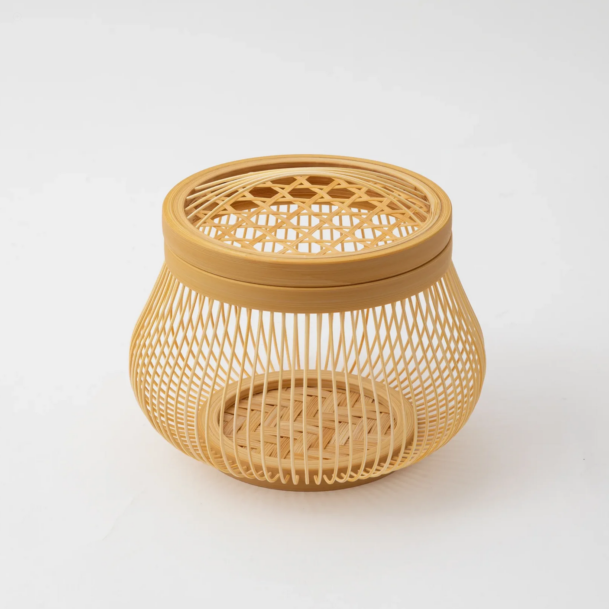
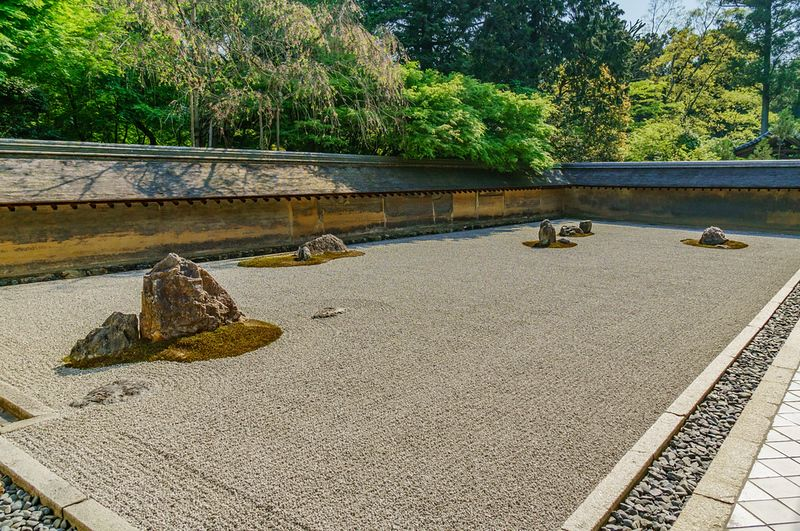
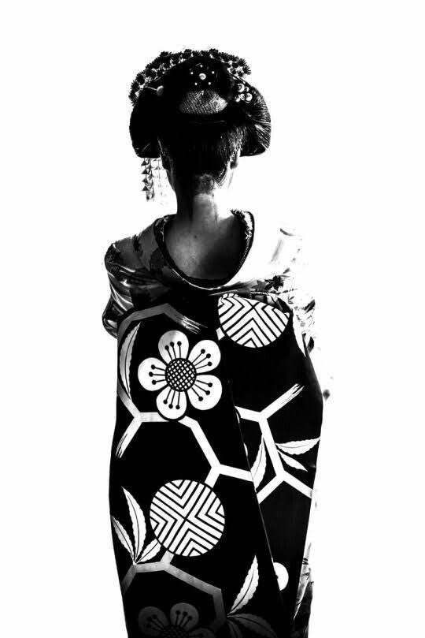
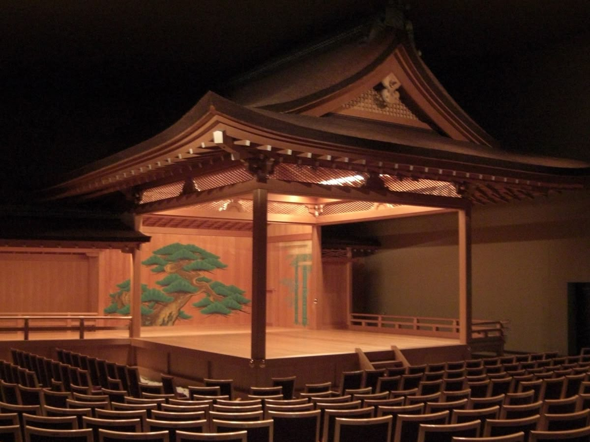
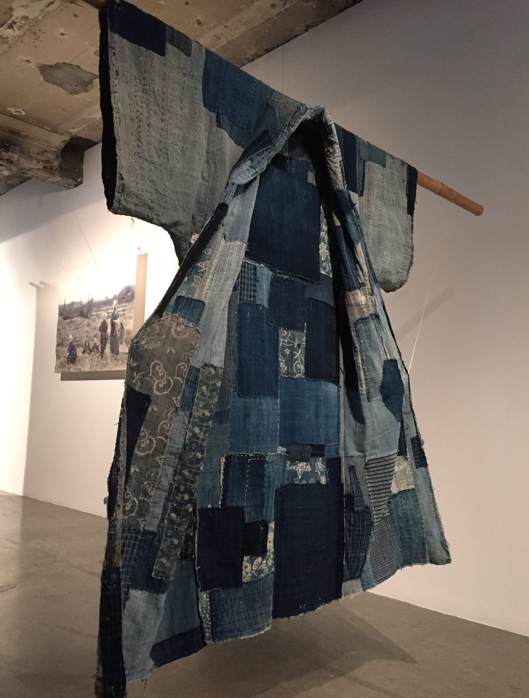

Historical Origin
Wabi-sabi comes from Zen Buddhism and values things that are weathered, asymmetrical, or imperfect.
Instead of chasing polish or perfection, it embraces the natural aging of materials and the irregularities of handmade work.
A study of Japanese aesthetic principles and their influence on modern design.
Beauty in imperfection, impermanence, and incompleteness.
Wabi-sabi comes from Zen Buddhism and values things that are weathered, asymmetrical, or imperfect.
Instead of chasing polish or perfection, it embraces the natural aging of materials and the irregularities of handmade work.

The meaningful gap.
The space between elements, not simply emptiness but an intentional pause that gives structure and rhythm.

Subtle, unobtrusive beauty.
Originating from the Muromachi period; Shibui signifies a subtle, refined, and unobtrusive beauty.
Originally referring to the sour taste of unripe persimmon (shibushi), it evolved by the Edo period to describe objects, art, or fashion that are simple, functional, and understated.

Simplicity by elimination.
Kanso is the removal of the unnecessary to reveal essence.
Unlike Western minimalism, Kanso is less about style and more about clarity of purpose.

Subdued displays of taste or wealth.
Iki originated in Edo-period urban culture and describes a cool, effortless sophistication.
It blends elegance with personality and confidence.

Profound grace and subtle beauty.
Yūgen refers to beauty that is suggested rather than fully revealed , evoking imagination and emotional depth.

A sense of regret concerning waste.
Mottainai expresses regret over waste and encourages reuse, repair, and appreciation of materials.

These seven principles collectively offer a lens to view the world differently. Not constantly seeking more, brighter, or louder, but finding profound beauty in what is essential, natural, and passing.